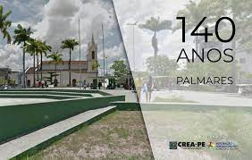
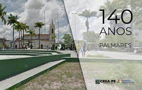

Conheça um pouco sobre a história de palmares
Palmares é um município brasileiro do estado de Pernambuco e uma das cidades mais tradicionais deste Estado. Além de grandes poetas, o município possui o primeiro teatro a funcionar no interior de Pernambuco e o terceiro mais antigo do Estado.
A cidade localiza-se a uma altitude de 125 metros acima do nível do mar, sua população estimada em aproximadamente 70 mil habitantes; limita-se ao norte com o município do Bonito, a nordeste e leste com Joaquim Nabuco, ao sul com Xexéu, a sudeste com Água Preta e a oeste com Catende; o clima predominante é do tipo quente e úmido, com chuvas de inverno e temperaturas máximas de 32°c e mínimas de 16 °c. Sua flora é composta por restos da vegetação primitiva da Mata Atlântica, algumas espécies arbóreas de alto valor econômico podem ser ainda encontradas, testemunhando o que foi a floresta nativa. Entre outras, pode-se detectar a presença da urucuba, louro, ipê amarelo, jatobá, pau-ferro, jacarandá mimoso e rosa, maçaranduba, pau d'arco, oiticica, camaçari rosa e branco, sucupira roxa e branca, etc. O município dos Palmares faz parte da microrregião homogênea denominada Mata Meridional Pernambucana, contida totalmente na Bacia do Rio Una. Além da carga histórica da cidade, há também um lado mais bucólico. Existem vários atrativos naturais para os visitantes.
O município é cercado por muitas águas. Distante 125 km do Recife, o município tem como principal atividade econômica a cana-de-açúcar, (que atualmente vem sofrendo enorme defasagem com a falência de muitas usinas) e além desta se destacam também a agricultura com: batata-doce, mandioca, banana, laranja e abacaxi. O comércio neste município ainda está em expansão com estabelecimentos de pequeno e médio porte, com destaque para os supermercados, lojas de material de construção, autopeças e confecção. Hoje mais de 60% dos moradores de Palmares têm atividades ligadas ao comércio. Compradores de várias cidades vizinhas vêm até Palmares para fazerem suas compras, e esses visitantes têm uma participação econômica no comércio de cerca de 40%. Com o término, duplicação da BR-101, Palmares, ganhou gande importância como trevo rodoviário, trazendo crescimento econômico à cidade.
 

Sobre a Cidade
Palmares é uma das cidades mais tradicionais de Pernambuco. Seu nome recorda a rebelião dos escravos africanos que, de 1630 a 1694 (ou 1697), constituíram um reino ou confederação de quilombos, que recebeu a denominação de Palmares.
Segundo a tradição local, na foz do rio Pirangi havia um reduto da famosa república dos negros, cujo centro, a 'Tróia Negra', de Oliveira Martins, se localizava na serra da Barriga, onde hoje se encontra o município de União dos Palmares, do Estado de Alagoas. Desse quilombo se teria originado a primitiva povoação que viria a tomar o atual nome de Palmares. Em princípios do século XIX existia na região um aldeamento de índios, conhecidos como Trombetas. Posteriormente, o Governo Imperial fez doação de terras que margeavam o rio Una a membros da família Montes, passando o local a ser chamado povoado dos Montes, nome mudado para Una, em virtude de sua localização às margens do rio de igual nome. Finalmente, Palmares. Seus proprietários construíram o engenho de Trombetas, cujas ruínas se encontram a leste da cidade, e uma capela, sob o orago de Nossa Senhora da Conceição dos Montes. Em 1873, Frei Caetano de Messina Sobrinho lançou a pedra fundamental da atual Matriz, junto à capela primitiva.
Origem do Seu Nome
O nome “Palmares” deriva da grande quantidade de palmeiras que existia na região, como: carnaúba, buriti, buritana, bacaba, babaçu, pindoba, dendê etc. Seu nome é também recorda a rebelião dos escravos africanos que de 1630 a 1697, constituiram um reino ou uma confederação de quilombos que recebeu a denominação de quilombos. “O Quilombo dos Palmares”, que se instalou na região foi o maior da história do Brasil, que dirigido pelo valente Zumbi, tomou impulso, fama e ganhou o nome que hoje tem. Embora não se saiba com precisão o número de habitantes no “Quilombo dos Palmares”, tendo em vista que a população flutuava ao sabor das conjunturas, historiadores estimam que, em 1670, alcançou cerca de vinte mil pessoas. Essa população sobrevivia graças à caça, à pesca, à coleta de frutas (manga, jaca, abacate e outras) e à agricultura (feijão, milho, mandioca, banana, laranja e cana-de-açúcar). Complementarmente, praticava o artesanato: (cestas, tecidos, cerâmica, metalurgia). Os excedentes eram comercializados com as populações vizinhas, de tal forma que colonos chegavam a alugar terras para plantio e a trocar alimentos por munição com os quilombolas.
Emancipação da Cidade
No ano de 1868, Palmares é elevado à categoria de Distrito, por força da lei provincial nº 844, de 28 de setembro. Palmares foi elevado à categoria de cidade pela Lei provincial nº 1.093, em 24 de maio de 1873, desmembrando-se do município de Água Preta. Administrativamente, Palmares está constituído pelos distritos sede e Santo Antônio dos Palmares e pelo povoado de Usina Serro Azul. Anualmente, no dia 09 de junho Palmares comemora a sua emancipação. Assume a paróquia Manoel Tertuliano de Figueiredo, sendo o primeiro Padre a comandar a Igreja Católica municipal. A construção de uma cultura. Palmares no decorrer de sua história foi berço de grandes artistas que com pensamentos modernistas transformaram esta terra em “TERRA DE CULTURA E DE GRANDEZA”.
Surgimento do Primeiro Clube Literario dos Palmares
No ano de 1868, Palmares é elevado à categoria de Distrito, por força da lei provincial nº 844, de 28 de setembro. Palmares foi elevado à categoria de cidade pela Lei provincial nº 1.093, em 24 de maio de 1873, desmembrando-se do município de Água Preta. Administrativamente, Palmares está constituído pelos distritos sede e Santo Antônio dos Palmares e pelo povoado de Usina Serro Azul. Anualmente, no dia 09 de junho Palmares comemora a sua emancipação. Assume a paróquia Manoel Tertuliano de Figueiredo, sendo o primeiro Padre a comandar a Igreja Católica municipal. A construção de uma cultura. Palmares no decorrer de sua história foi berço de grandes artistas que com pensamentos modernistas transformaram esta terra em “TERRA DE CULTURA E DE GRANDEZA”.
Seus Rios
A bacia hidrográfica do Una assemelha-se a um grande losango recortado no sentido oeste-leste, onde seus eixos principal e secundário medem, respectivamente, cerca de 240 e 70 km. O Rio Una nasce na serra da Capoeira, a uma altitude de aproximadamente 900 metros e percorre cerca de 200 km até seu encontro com o Oceano Atlântico, no município de Barreiros. Drena, ao longo de seu curso, a partir da nascente, as cidades de São Bento do Una, Cachoeirinha, Palmares, Água Preta, Barreiros e áreas dos municípios de Altinho, Agrestina, São Joaquim do Monte, Belém de Maria, Bonito e Catende. O seu escoamento é intermitente até as proximidades da cidade de Altinho, quando a partir daí se torna perene face ao aumento dos índices pluviométricos da região. O Una corta o município dos Palmares na direção oeste-leste até a Fazenda Couceiro, onde toma a direção sul até encontrar a sede do município, tomando novamente a direção leste até os limites de Água Preta, onde forma a cachoeira dos Martins. O principal tributário é o Rio Piranji, situado à margem direita.
Cine Teatro Apolo

Aproximadamente em 1907, o comerciante Fausto Figueiredo (antes de ser prefeito deste município) comprou um casarão antigo situado na rua da matriz. Ele o reformou e inaugurou o Cine Teatro Apolo ( nome este, pelo fato do proprietário ser admirador de um ator famoso que tinha este nome em um filme de faroeste) e inaugurou o cinema em 14 de dezembro de 1914.
Por ser o primeiro Cinema do interior do Estado de Pernambuco, tornou-se também o mais famoso e em seu palco aconteceram muitos espetáculos como peças teatrais, recitais e filmes, sempre com casa cheia. Pela fama do Cine Teatro Apolo, muitos vinham de grande parte do país para conhecer seu interior, e por ele grandes nomes passaram. (Valdemar de Oliveira, Vinicius de Morais, Lelé Corrêa, Hermilo Borba Filho, Aluísio Freitas, Fenelon Barreto, Ascenso Ferreira, Celecina Vasconcelos, Procópio e Bibi Ferreira. O cinema funcionou durante 70 anos, até que o prefeito Luiz Portela de Carvalho comprou o prédio da família do Senhor Amaro Bezerra de Vasconcelos ( atual proprietário). No ano de 1983 e 1984 tornou-se sede da Fundação Casa da Cultura Hermilo Borba Filho ( homenagem ao teatrólogo e romancista palmarense que viveu de 1917 a 1976). Segundo dados colhidos houve um período em que o Cine Teatro Apolo tornou-se uma loja de móveis (Norma Rocha Magazine) e o senhor Aluízio Freitas em conversa com o Senhor Luiz Portela de Carvalho contou-lhe de sua tristeza em ver aquele local servindo de comercio, foi então que o prefeito sensibilizado imediatamente comprou o prédio e o transformou em lei municipal de nº 896 de 08/07/1983.